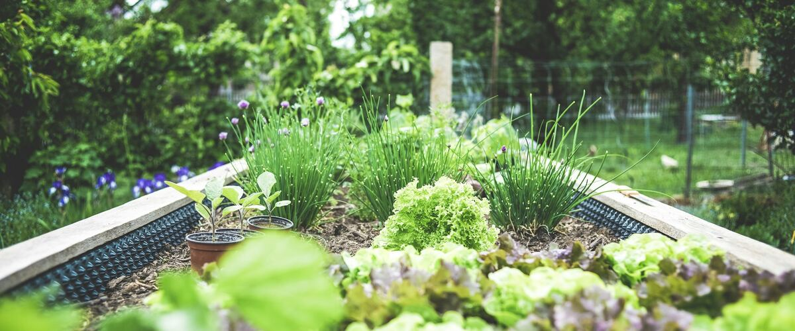
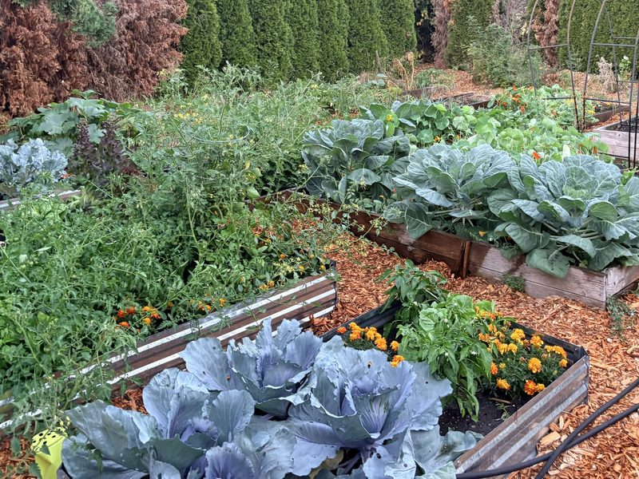

Beds, soil and water · Oregon · Washington · Idaho
Raised Beds for Rainy Northwest Gardens
Why raised beds suit the Northwest so well, how big and deep to build them, what to fill them with, and the mistakes to avoid.
Ask Northwest gardeners for one piece of advice and many will say: build raised beds. If you've ever tried to dig a vegetable bed in April and pulled up a spadeful of cold, gray clay that stuck to your boots, you already know why. Our long, wet winters and springs leave ordinary garden soil soggy and cold for weeks. A raised bed drains faster and warms sooner, which can mean planting earlier and losing fewer seeds to rot.
They're also just easier on you. Less bending, fewer weeds, a clear edge between "garden" and "lawn," and soil that stays loose enough to plant with your hands.
Why they work here
- Drainage. Excess water runs out of the bed instead of sitting around the roots. That matters for garlic, strawberries and anything that rots in wet soil.
- Warmer soil. Soil above ground level warms up faster in spring, which helps tomatoes, beans and squash. See why soil temperature matters.
- Better soil from day one. Many Northwest yards have heavy clay or rocky fill. A raised bed lets you start with good soil.
- No walking on the soil. Soil you never step on stays loose, so roots and water move through it easily.
How big
Make beds no wider than about 4 feet, so you can reach the middle from either side without stepping in. Length is up to you; 8 feet is common because lumber comes in that length. Leave paths at least 2 feet wide, wider if you'll use a wheelbarrow.
About 10 to 12 inches deep is enough for most vegetables, especially if you loosen the soil underneath before filling. Go deeper if you have very poor soil below or want to garden with less bending.
What to build them from
- Untreated cedar is the Northwest favorite. It resists rot naturally and lasts many years.
- Metal beds last a long time and warm up quickly in spring.
- Avoid old railroad ties and any wood treated with creosote around food crops.
Pressure-treated lumber is a common question. The old arsenic-based treatment (CCA) was phased out of wood sold for home use in the early 2000s, and today's treated lumber uses copper-based preservatives instead. Many university Extension services consider modern treated wood acceptable for vegetable beds, though some gardeners still prefer to avoid it or line the inside with heavy plastic. If you're reusing old lumber of unknown age, leave it out of the vegetable garden.
Before you fill: what goes underneath
Set the bed where you want it, then deal with what's under it. If it's sitting on lawn, lay flattened cardboard (tape and labels removed) over the grass inside the frame and soak it. It smothers the grass and breaks down within a season. Avoid landscape fabric under vegetable beds; it stops roots from going deeper and gets tangled in your spade later.
If moles or gophers are a problem in your area, staple galvanized hardware cloth (a stiff wire mesh, not chicken wire) across the bottom of the frame before filling. It's far easier to do now than after the bed is full.
If you can, loosen the native soil under the bed with a garden fork first, even in clay. Roots will go down into it over time, and it helps the bed drain.
What to fill them with
A blend of good topsoil and compost works well. Many garden suppliers in the region sell a ready-made "vegetable garden mix." Avoid filling beds with pure compost or with bagged potting mix alone: pure compost can be too rich and settles a lot, and potting mix is made for containers and gets expensive in volume.
Expect the soil level to drop a few inches in the first year as it settles. Top up with compost each spring or fall.
How much soil will you need?
More than most people expect. Multiply length by width by depth in feet to get cubic feet. A 4 by 8 foot bed filled 1 foot deep holds 32 cubic feet, a bit more than a cubic yard. Bagged soil usually comes in 1 or 1.5 cubic foot bags, so that's 20 to 30 bags for one bed. If you're filling more than one or two beds, it's usually much cheaper to order bulk soil by the cubic yard (27 cubic feet) from a local landscape supply and have it delivered or pick it up in a truck.
Ask the supplier what's in their vegetable mix and whether it's been screened. A good mix looks dark and crumbly and doesn't smell sour. If it's mostly fine bark or wood, it may tie up nitrogen for the first season, so add a balanced fertilizer when you plant.
Common mistakes
- Too wide. If you have to step in the bed to reach the middle, you'll compact the soil you built it to protect.
- Too shady. Most vegetables need at least six hours of direct sun; tomatoes and squash want eight or more.
- Forgetting water. Raised beds drain well, which also means they dry out faster in summer. Lay a soaker hose or drip line before you plant. See how much to water.
Taller beds
If kneeling or bending is hard on your back or knees, consider beds 24 to 30 inches tall, with a ledge wide enough to sit on. You won't need to fill the whole depth with expensive garden soil: many people fill the bottom third with cheaper fill soil, then top with a foot or more of good vegetable mix. Tall beds dry out even faster than low ones in summer, so plan for drip irrigation from the start.
New to all this? The beginner's guide walks through a first raised-bed garden step by step.

Raised beds of cabbage, tomatoes and marigolds in late summer. Photo: Janelle Burklund, contributor